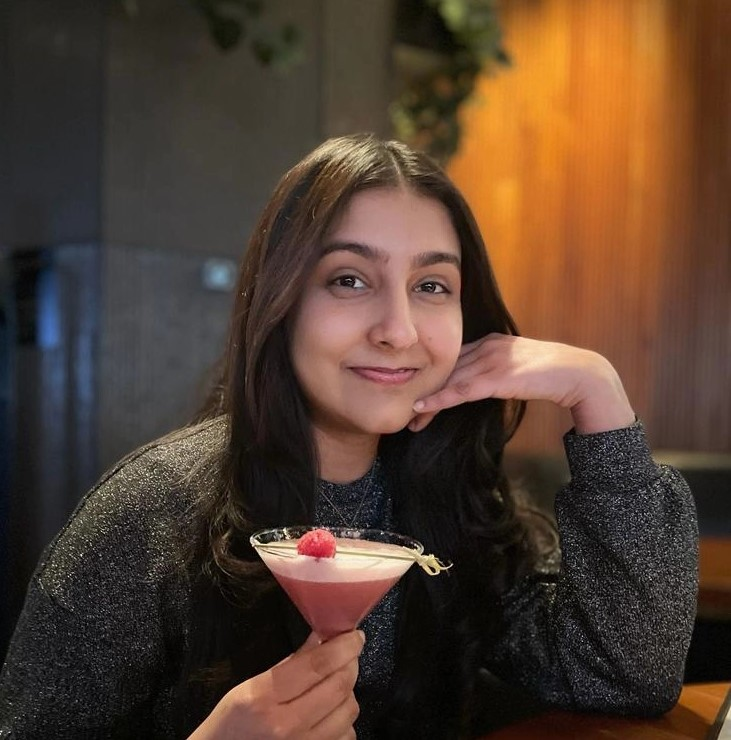
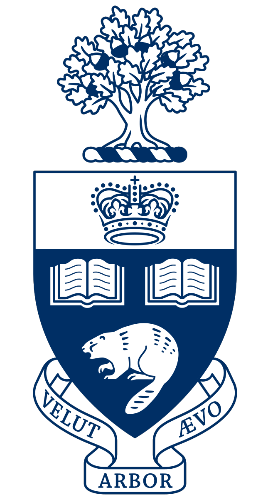

 Hello, I am Ashmita Bhattacharyya, a second-year Engineering Science student at the University of Toronto, with an interest in Machine Intelligence, Pure Mathematics and Quantum Computing. In my spare time, I enjoy visual arts, travelling and reading. I am an undergraduate student researcher at National University of Singapore (NUS), under Prof. Erik Birgersson, funded by the ESROP Global. Our team is working on a project focussed on optimizing Machine Learning Algorithms to predict the performance of Perovskite Solar cells with PhD students at the Solar Energy Research Institute of Singapore (SERIS). Notably, during this summer internship, my team won 1st place in MakerMania 2023, a Hackathon hosted by NUS. I am an Operations Engineer at aUToronto, U of T's self-driving car team. I am part of the Mobility Innovation subteam - we researched and proposed a holistic solution to the General Motor's 000 Challenge as part of the Autodrive challenge (R2Y2). LinkedIn | Email  B.A.Sc in Engineering Science University of Toronto 2022 - 2027 (PEY Co-op) GPA: 3.8/4.0 Dean's Merit Scholar Graduated as Valedictorian Kuper Academy High School 2018 - 2021 Aggregate: 96% Recipient of the Governor General's Academic Medal